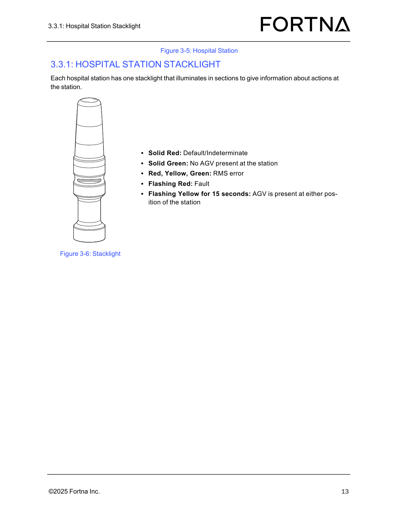

| Procedure ID | proc_inspect_each_hospital_station_during_daily_preventive_maintenance_v1 |
|---|---|
| Title | Inspect Each Hospital Station During Daily Preventive Maintenance |
| Procedure Type | diagnostic |
| Primary Role | L2_support |
| Support Safe | Yes |
| Validation Status | needs_sme_review |
| Merge Status | source_finalized |
Perform the documented daily preventive maintenance inspection for each hospital station by checking barcode scanner operation, confirming stacklight operation, verifying the tabletop is free of debris, and recording whether each inspection point meets the source criteria.
Use during daily preventive maintenance when inspecting each hospital station for the documented inspection points: barcode scanner operation, stacklight operation, and tabletop cleanliness.
Responsible role: L2_support
Instruction:
Go to the hospital station and inspect whether the barcode scanner is operational.
Expected result:
The barcode scanner is operational.
Screens / Images:


Stop or Escalate If:
Responsible role: L2_support
Instruction:
Check whether the hospital station stacklight is operational.
Expected result:
The stacklight is operational.
Screens / Images:


Stop or Escalate If:
Responsible role: L2_support
Instruction:
Inspect the hospital station tabletop and verify it is free of debris.
Expected result:
The tabletop is free of debris.
Screens / Images:
Stop or Escalate If:
Responsible role: L2_support
Instruction:
Record whether each documented inspection point meets the source criteria for each hospital station.
Expected result:
Inspection results are recorded for barcode scanner operation, stacklight operation, and tabletop cleanliness for each hospital station.
Stop or Escalate If: